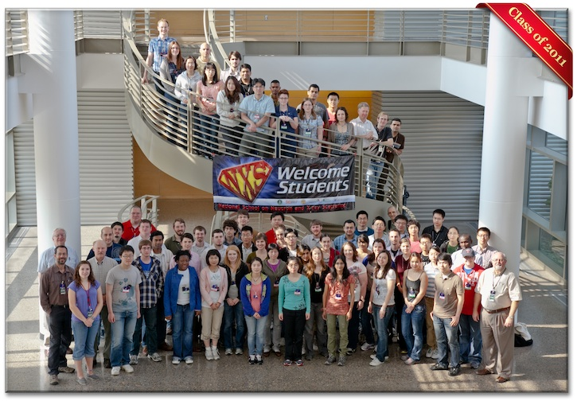
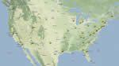
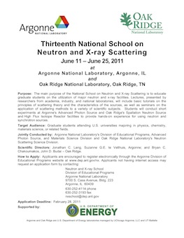

| |
| Schedule Participants Travel Info |
Lecture Notes/Videos |
| ANL Map ANL Visitor's Guide HFIR Facility SNS Facility HFIR/SNS Map |
| Wireless Networks ORNL |
| ORNL |
| NSSA New Initiatives NSSA Weblink |
| Contacts ANL ORNL |
13th National School on Neutron & X-ray Scattering
2011 NXS Participant InverviewsWatch participants answer questions from Miriam Kramer about their experiences at NXS 2011. 2011 NXS School Participants 2011 NXS School survey now on line!Please begin the on-line survey for 2011 NXS School participants via the web link sent to you by email. Your feedback about lectures and experiments is important for evaluating this year’s Neutron and X-ray Scattering School and for making improvements for future participants. We sincerely hope that each of you will complete the survey by the end of the School. Purpose: The main purpose of the National School on Neutron and X-ray Scattering is to educate graduate students on the utilization of major neutron and x-ray facilities. Lectures, presented by researchers from academia, industry, and national laboratories, will include basic tutorials on the principles of scattering theory and the characteristics of the sources, as well as seminars on the application of scattering methods to a variety of scientific subjects. Students will conduct four short experiments at Argonne's Advanced Photon Source and Oak Ridge's Spallation Neutron Source and High Flux Isotope Reactor facilities to provide hands-on experience for using neutron and synchrotron sources. Target Audience: Graduate students attending U.S. universities majoring in physics, chemistry, materials science, or related fields. Jointly Conducted by: Argonne National Laboratory's Division of Educational Programs, Advanced Photon Source, and Materials Science Division and Oak Ridge National Laboratory's Neutron Scattering Science Division. Scientific Directors: Jonathan C. Lang, Suzanne G.E. te Velthuis, Bryan C. Chakoumakos, and John D. Budai. How to Apply: Applicants are encouraged to register electronically through the Argonne Division of Educational Programs website at www.dep.anl.gov/nx. Application Deadline: February 28, 2011. |
{kind=link}
|
Follow us on Facebook  Map of participating institutions |
|
| Workshop Archives: | |
| 2008 | |
| 2009 | |
| 2010 | |
| 13th National School on Neutron & X-ray Scattering |
|
|  | |